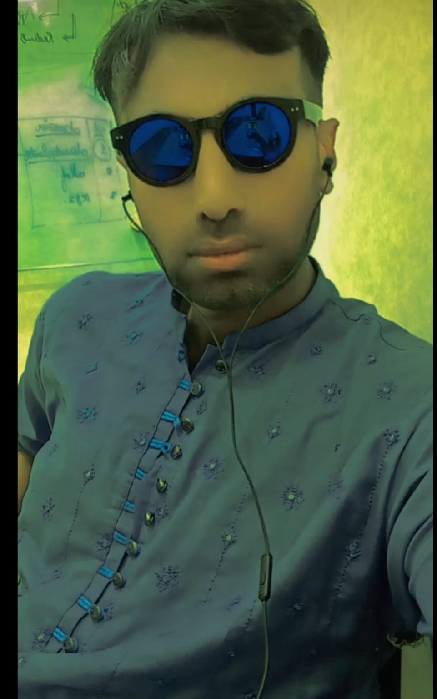

0<body>

<!-- Navbar (YAHAN paste karo - sab se upar) -->
<div style="background:#333; padding:10px; border-radius:10px; margin-bottom:20px;">

  <a href="#about" style="color:white; margin-right:20px; text-decoration:none;font-size:20px;">About</a>

  <a href="#skills" style="color:white; margin-right:15px; text-decoration:none;font-size:20px;">Skills</a>

  <a href="#post" style="color:white; margin-right:15px; text-decoration:none;font-size:20px;">Post</a>
  <a href="#contact" style="color:white; text-decoration:none;font-size:20px;">Contact</a>
<h1 class="lights">Welcome to My Website</h1>

<style>
.lights {
    text-align: center;
    font-size: 40px;
    font-weight: bold;
    animation: colorChange 1s infinite;
}

/* Color changing animation */
@keyframes colorChange {
    0%   { color: red; }
    25%  { color: yellow; }
    50%  { color: blue; }
    75%  { color: lime; }
    100% { color: red; }
}
</style>
  <style>
.profile {
    width: 150px;
    height: auto;
    border-radius: 12px;
    display: green;
    margin: 20px auto;
    box-shadow: 0 8px 20px rgba(0,0,0,0.4); /* shadow */
    transition: 0.3s;
}

/* hover effect (optional but stylish) */
.profile:hover {
    transform: scale(1.05);
}
</style>


}
</h1>
</style>
<h2>About Me</h2>
<b>Muhammad Shahid Iqbal</b> is a motivated and passionate individual currently learning web development and building his skills in the digital field. He has a strong interest in creating modern, responsive websites and aims to establish a successful career in the online world.</p>

<p>He was born in 2001 in Mardwal, District Khushab, Pakistan, and is currently 26 years old. He has a height of 6 feet and maintains a disciplined and focused lifestyle. He is single and follows Islam.</p>

<p>In terms of communication, Shahid is comfortable speaking both English and Urdu, which helps him interact effectively in diverse environments. He is continuously working on improving his technical skills and is dedicated to personal and professional growth.</p>
<h2>My Skills</h2>
<ul>
  <li>Web Development (Learning)</li>
  <li>MS Office (Word, Excel, PowerPoint)</li>
  <li>Electrical Work</li>
</ul>
<h2>Contact Me</h2>
<p>Email: mshahidiqbal834@gmail.com</p>
  <p style="color:white; font-size:18px;">
    ☎️ <a href="tel:03058767834" style="color:white; text-decoration:none; font-weight:bold;">
    0305-8767834
    </a>
</p>
</p>
<div class="section"
</p>
<div class="section">
<h2>My Post</h2>
<div class="post">
  <div class="post">
  <h3>The Beauty of Wadi Soon</h3>
  <p>
    Wadi Soon is one of the most beautiful valleys in Pakistan, located in the Khushab District. It is famous for its breathtaking scenery, green hills, and peaceful environment. The valley offers a perfect escape from busy city life, where visitors can enjoy fresh air, natural landscapes, and calm surroundings. Many tourists visit Wadi Soon to experience its beauty, relax in nature, and spend quality time with family and friends.
  </p>
  </div>
  
<div class="post">
  <h3>Weather of Wadi Soon</h3>
  <p>
    Wadi Soon is known for its pleasant and refreshing weather throughout the year, making it a popular destination for visitors. During the summer season, the temperature remains moderate compared to other parts of Pakistan, providing a comfortable environment for tourists who want to escape the extreme heat. The gentle breeze and fresh air add to the relaxing atmosphere of the valley. In winter, the weather becomes cool and sometimes quite chilly, especially during the night and early morning, giving the area a peaceful and calm feeling. Rainfall plays an important role in enhancing the natural beauty of Wadi Soon, as it makes the hills greener, fills the lakes, and creates a more vibrant landscape. After rain, the scenery becomes even more attractive, with clear skies and a refreshing environment. Overall, the climate of Wadi Soon is ideal for tourism, picnics, and spending quality time in nature.
  </p>
</div>
<div class="image-section">
  
  
</div>

<style>
.image-section {
  display: flex;
  gap: 10px;
  margin: 10px 0;
}

.image-section img {
  width: 50%;
  border-radius: 15px;
  box-shadow: 0 4px 10px rgba(0,0,0,0.2);
}
</style>
<div class="post">
  <h3>Maiwali Dheri</h3>
  <p>
    Maiwali Dheri is a beautiful place in Wadi Soon, known for its natural charm and peaceful environment. Surrounded by green hills and fresh air, it attracts visitors who enjoy nature and relaxation. The calm atmosphere makes it an ideal spot for tourism and spending quality time. People from different areas visit this place to enjoy its scenic views and create memorable moments with family and friends.
  </p>
</div>
<div class="btn-container">
  <a href="page2.html" class="next-btn">
    Next Page <span>➜</span>
  </a>
</div>

<style>
.btn-container {
  text-align: center;
  margin: 40px 0;
}

.next-btn {
  display: inline-flex;
  align-items: center;
  gap: 10px;
  padding: 14px 30px;
  font-size: 30px;
  font-weight: 600;
  color: #fff;
  text-decoration: none;
  border-radius: 50px;
  background: linear-gradient(135deg, #4facfe, #00f2fe);
  box-shadow: 0 8px 20px rgba(0,0,0,0.2);
  transition: all 0.3s ease;
  position: relative;
  overflow: hidden;
}

/* Hover effect */
.next-btn:hover {
  transform: translateY(-3px) scale(1.05);
  box-shadow: 0 12px 25px rgba(0,0,0,0.3);
}

/* Arrow animation */
.next-btn span {
  transition: transform 0.3s ease;
}

.next-btn:hover span {
  transform: translateX(5px);
}

/* Shine effect */
.next-btn::before {
  content: "";
  position: absolute;
  top: 0;
  left: -75%;
  width: 50%;
  height: 100%;
  background: rgba(255,255,255,0.3);
  transform: skewX(-25deg);
  transition: 0.5s;
}

.next-btn:hover::before {
  left: 125%;
}
</style>


<html lang="en">
<head>
<meta charset="UTF-8">
<title>Wadi Soon Villages</title>

<style>
body {
    margin: 0;
    font-family: 'Segoe UI', sans-serif;
    background: linear-gradient(to right, #1e3c72, #2a5298);
    color: white;
    text-align: center;
}

/* Heading */
h1 {
    margin-top: 30px;
    font-size: 40px;
    letter-spacing: 2px;
    text-transform: uppercase;
}

/* Container */
.container {
    display: grid;
    grid-template-columns: repeat(auto-fit, minmax(250px, 1fr));
    gap: 20px;
    padding: 40px;
}

/* Cards */
.card {
    background: rgba(255,255,255,0.1);
    border-radius: 15px;
    padding: 20px;
    backdrop-filter: blur(10px);
    box-shadow: 0 8px 20px rgba(0,0,0,0.3);
    transition: 0.3s;
}

.card:hover {
    transform: translateY(-10px) scale(1.05);
    background: rgba(255,255,255,0.2);
}

/* Village Name */
.card h2 {
    margin: 0;
    font-size: 22px;
}

/* Button */
.btn {
    margin: 30px;
    padding: 12px 25px;
    border: none;
    border-radius: 25px;
    background: #00c6ff;
    color: green;
    font-size: 16px;
    cursor: pointer;
    transition: 0.3s;
}

.btn:hover {
    background: #00ffcc;
}
</style>

</head>

<body>

<h1>🌿 Wadi Soon Villages 🌿</h1>

<div class="container">

    <div class="card"><h2>Naushera</h2></div>
    <div class="card"><h2>Kanhatti</h2></div>
    <div class="card"><h2>Uchhali</h2></div>
    <div class="card"><h2>Angah</h2></div>
    <div class="card"><h2>Sakesar</h2></div>
    <div class="card"><h2>Jabba</h2></div>
    <div class="card"><h2>Mardwal</h2></div>
    <div class="card"><h2>Padhrar</h2></div>
    <div class="card"><h2>Khabbeki</h2></div>
    <div class="card"><h2>Kufri</h2></div>
    <div class="card"><h2>khura</h2></hiv>
</div>

<style>
.post-card {
    max-width: 800px;
    margin: 30px auto;
    background: rgba(255,255,255,0.1);
    padding: 20px;
    border-radius: 15px;
    backdrop-filter: blur(10px);
    box-shadow: 0 8px 20px rgba(0,0,0,0.3);
    color: white;
    text-align: left;
}

.post-card h3 {
    text-align: center;
    font-size: 28px;
    margin-bottom: 15px;
}

.post-card p {
    line-height: 1.8;
    font-size: 16px;
}
</style>

<div class="post-card">
<h3>🌿 Kanhatti Garden – Wadi Soon</h3>

<p>
Kanhatti Garden is one of the most beautiful and peaceful places in Wadi Soon Valley, located in the Khushab District of Pakistan. Surrounded by lush green hills and natural landscapes, this garden offers a refreshing escape from busy city life. Its calm environment, fresh air, and scenic beauty make it an ideal destination for tourists and nature lovers.
<br><br>
Visitors come here to relax, enjoy peaceful walks, and spend quality time with family and friends. The garden is also perfect for photography, picnics, and exploring the natural charm of the region. During spring and winter seasons, the weather becomes even more pleasant, adding to its beauty.
<br><br>
Kanhatti Garden truly represents the hidden beauty of Wadi Soon, making it a must-visit place for anyone who loves nature, peace, and scenic views.
</p>
</div>
